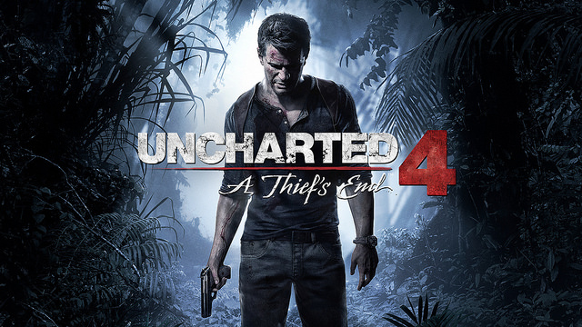

Los videojuegos de aventura son un género de videojuegos, caracterizados por la investigación, exploración, la solución de rompecabezas, la interacción con personajes del videojuego, y un enfoque en el relato en vez de desafíos basados en reflejos. Es importante observar que este término no tiene relación con las películas y novelas de aventura y no es indicativo del tema o del sujeto que trata. La vasta mayoría de videojuegos de aventura son videojuegos de computadora, aunque los videojuegos de aventura de videoconsola no son desconocidos.
El género de aventura surgió a principios de los años 1970, gracias a programador, explorador de cavernas, y jugador de rol William Crowther, quien desarrolló un programa llamado Colossal Cave Adventure ("Aventura de la Cueva Colosal").
Los subgenéros se dividen en: Aventura grafica: A comienzos de los 1990, el uso creciente del ratón dio pie a los juegos de aventura de tipo «Point and click», también llamados aventura gráfica, en los que ya no se hacía necesaria la introducción de comandos. El jugador puede, por ejemplo, hacer clic con el puntero sobre una cuerda para recogerla. A finales de los 1990, este tipo de juego sufrió una importante pérdida de popularidad, las presentaciones de productos de masas se hicieron raras, hasta el punto que hubo quienes predijeron la muerte de este tipo de videojuegos. No obstante, en 2005, los juegos de aventura experimentaron un retorno con títulos como The Moment of Silence, The Black Mirror, Sherlock Holmes: The Silver Earring o NiBiRu: Age of Secrets. Los grandes juegos de aventura de la historia incluyen títulos como Day of the Tentacle, los juegos de la serie King's Quest, la serie Leisure Suit Larry, la serie Broken Sword, la serie Gabriel Knight, la serie Police Quest, la serie Space Quest y los de Monkey Island. He aquí otros ejemplos de juegos de aventura de LucasArts: Indiana Jones and the Fate of Atlantis(1992), Maniac Mansion (1987), The Dig (1995), Full Throttle (1995), Mundodisco, Grim Fandango(1998) y Sam & Max Hit the Road (1993), y Runaway de Dinamic Multimedia (2001), Lure of the Temptress de Virgin Interactive (1992), Syberia y Syberia II ambos de Microïds (2003 y 2004, respectivamente), y la serie The Legend of Kyrandia de Cing Another Code: Two Memories (2005), y Hotel Dusk: Room 215 (2007). Por último, en la década de 2010 toma cuerpo un nuevo subgénero de avengura gráfica conocido como juegos de exploración o walking simulators, caracterizados por un gran enfoque en la narración, fundamentalmente lineal, y una interactividad mínima, limitada a la búsqueda de objetos que permiten proseguir el relato o la resolución de algunos puzles. Títulos destacados de esta variedad son por ejemplo Dear Esther, Gone Home o Firewatch. Acción-aventura: Se trata de un género mixto, altamente popular, de juegos con un planteamiento similar a los de aventura pero en los que hay un fuerte componente de acción. Ejemplos: The Legend of Zelda, Uncharted, The Last of Us, Tomb Raider, Grand Theft Auto, Prince of Persia, Soul Reaver, God of war, Batman: Arkham, y Assassin's Creed. Muchos de estos juegos se pueden encuadrar también dentro de los juegos de disparos en tercera persona. Adicionalmente, cabe destacar dos subgéneros populares que mezclan también acción y aventura, como son los Survival horror y los juegos de sigilo.